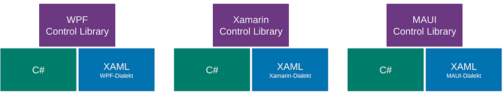
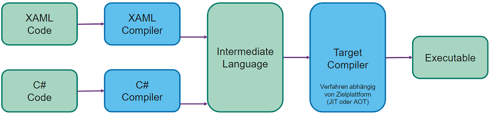

XAML: eXtensible Application Markup Language
XAML Grundlagen
XML basiert, nur in Microsoft (.NET) UI-Framekworks verwendet zur Trennung von Layout und Code. Hierarchisch strukturiert. Leicht verschiedene Varianten für WPF/UWP/WinUI/Xamarin/MAUI.

Control Libraries: spezifische SDK Bibliothek für Controls, Layouts, Buttons etc.

Visual und Logical Tree
Ansicht kann in Visual Studio umgeschaltet werden. Visual Tree: vollständiger Baum der visuell dargestellt wird, enthält sämtliche Knoten. Logical Tree: Vereinfachung, beinhaltet nur selber definierte Knoten
Namespaces
Können/müssen im Application Knoten definiert werden: xmlns:name="clr-namespace:mein_csharp_namespace"
- ohne Name ein Standard Namespace. Üblich: Standard ist MAUI
Control Library, x für XAML-spezifisches, localfür eigenes Assembly. x:Class ="Vorlesung_09.App" definiert zugehörige Code-Behind Klasse.
Named Elements
x:Name="myElement"Attribut erstellt ein Property in der generierten Klasse,
ermöglicht Zugriff aus Code-Behind.
Event Handler
Methode aus Code Behind kann in XML registriert werden. parameter object sender
ist das auslösende Control. Argumente enthalten Details zum Event
(abgeleitet von EventArgs)
<Button Clicked="Button_OnClicked" Text="Click Me!" />xxxxxxxxxxprivate void Button_OnClicked(object sender, EventArgs args) {/* some logic*/ }XAML Syntaxen
xxxxxxxxxx<Label Text="Attribute Syntax" TextColor="Red" /><Label Text="Property Element Syntax"> <Label.TextColor> <Color>Red</Color> </Label.TextColor></Label>Content Properties
Spezielle Eigenschaft kann direkt als Inhalt des XML-Tags geschrieben werden, kann aufwändige Property Element Syntax vereinfachen.
xxxxxxxxxx<Label Text="Inhalt" /> oder <Label>Inhalt</Label><VerticalStackLayout> <VerticalStackLayout.Children> <!-- Children ist Content Property von VerticalStackLayout: --> <Label>Inhalt</Label> </VerticalStackLayout.Children> <!-- kann weggelassen werden --></VerticalStackLayout>Attached Properties
Setzen einer Eigenschaft auf einem Element, welche zu einem anderen
Element gehört. Pendant in Android die layout_ Attribute.
xxxxxxxxxx<Grid> ... <Label Grid.Row="0" x:Name="Test"></Label></Grid>Type Converters
Werden verwendet, um im XAML aus meist String-Eingaben verschiedenste komplexere Elemente zu parsen (Location, Brush, Color, etc.). Viele Converters sind im .NET Community Toolkit enthalten.
Klasse leitet ab von IValueConverter mit zwei Methoden Convert und ConvertBack. XAML Binding Attribut definiert den Converter als
StaticResource.
xxxxxxxxxxpublic class IntToBoolConverter : IValueConverter{ public object Convert (object value, Type targetType, object parameter, CultureInfo culture) { return (int)value != 0; } public object ConvertBack(object value, Type TargetType, object parameter, CultreInfo culture) { return (bool)value ? 1 : 0; }}xxxxxxxxxx<Button Text="Search" IsEnabled="{Binding Source={x:Reference entry1}, Path=Text.Length, Converter={StaticResource intToBool}}" /><!-- Ref entry1 = zu prüfendes Textfeld, Text.Length = zu konvertierender Wert -->Markup Extensions
Erlauben Logik in XAML, häufig für Styling oder Data Binding
verwendet. Auch eigene Extensions möglich. Aufzurufende Funktion
innerhalb { }
xxxxxxxxxx<Label Text="Mein Text" FontFamily="{x:Null}" /><Label Text="{local:LocationExtension Lat=10,Long=20}" />xxxxxxxxxxpublic class LocationExtension : IMarkupExtension<string>{ public string Latitude { get; set; } public string Longitude { get; set; } public string ProvideValue(IServiceProvider sp) => Latitude + " / " + Longitude; object IMarkupExtension.ProvideValue(IServiceProvider sp) => ProvideValue(sp);}GUI-Grundelemente

Grundlegender Aufbau einer Seite (--> Enthält 1 oder mehrere von)

Application
MainPage: definiert erster angezeigter Screen, erzeugt und verwaltet Fenster. Verarbeitung von Lifecycle Events in überschreibbaren Methoden (für alle Fenster). Zentrale Verwaltung von app-weiten XAML Ressourcen.
Window
Definiert ein einzelnes Fenster inkl. Lifecycle Methoden, zum überschreiben ist eine eigene Ableitung von Window nötig.
Lifecycle

Grau: Nicht im Memory geladen.

Pages
Elemente zur Strukturierung und Gestaltung von Screens. Verschachtelung üblich. Content Page (leer), Flyout Page (Benötigt NavigationPage für korrekte Darstellung. Seitlich "einfliegende" Content Page), Navigation Page (Titel Bar mit Back Button), Tabbed Page (Vereint mehrere ContentPages mittels Tab Navigation)
Navigation
Modal: Vordefinierte Abfolge von Fenstern, kann nicht einfach
geschlossen werden
Modeless: Navigation Stack, User kann jederzeit zurück navigieren. NavigationPage benötigt.
Varianten: Application.MainPage, austausch der angezeigten Page (sehr einfach). NavigableElement.Navigation (s.o.), Shell (URIs)
Layouts
Sind Container für Kind-Elemente => Composite Design Pattern.
Verschachtelung möglich (analog Android).
Zur Ausrichtung von Kind-Elementen im Layout wird HorizontalOptions und VerticalOptionsverwendet. Varianten sind Start, Center, End, Fill
(Standard).
StackLayout: Horizontal- oder Vertical Stack Layout möglich.
FlexLayout: Wie Stack aber mit Wrapping und mehr Gestaltungsmöglichkeiten. Direction="[Row|Column]", Wrap="Wrap", JustifyContent, AlignItems zur Verteilung der Items auf beiden Achsen.
Grid: Flexibles, verbreitetes Layout. Zeilen und Spalten. Sehr
mächtig.
Grössen: 1*, 2*, 3* = relative Einheiten. einmalig *
vergeben für "brauche restlich verfügbaren Platz". auto
wie Android wrap_content (overhead, Koordination durch
Elternlayout). Mehrere Elemente in der selben Zelle werden auf der
z-Axis gestapelt (=> Background Image). Weiter Row/ColumnSpacing(Abstand), Row/ColumnSpan(Verbundene Zellen).
AbsoluteLayout: Gut für Overlays, Karten mit Controls etc. Absolute Werte
(selten), Proportionale Werte (in Prozent vom Elternelement, zw.
0.0-1.0). Wertetypen sind Kombinierbar.
Views
Werden mit Handlers auf native Views abgebildet (W10).
| Darstellung | Label, Image, Border, Frame, ScrollView, ... |
|---|---|
| Eingaben | Entry, CheckBox, Slider, Switch, ... |
| Aktionen | Button, ImageButton, SearchBar, ... |
| Aktivitätsanzeige | ActivityIndicator und ProgressBar |
| Collections (W11) | Picker, ListView, CarouselView, TableView, ... |
Grössenangaben: immer DeviceIndependent Units. Relative Werte ohne Einheit, Umrechnung auf plattformspezifische Werte bei Ausführung. Sind nur Wünsche an die Rendering-Engine (Minimum-/MaximumHeightRequest. Ohne Grössenangabe wird View "so gross wie nötig" bzw. wie in Android wrap_content dargestellt.
Margin und Padding
Pages: Padding, Layouts und Views: Margin und Padding. Mögliche
Werte sind all / horizontal,vertical / l,t,r,b